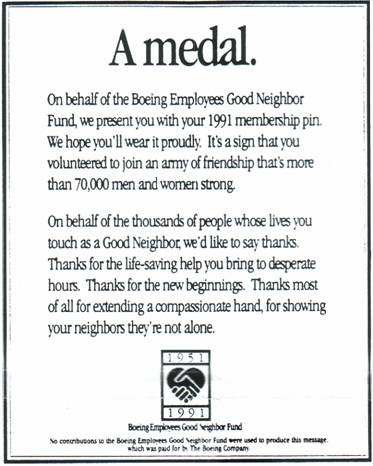

СВЕДЕНИЯ ОБ АВТОРЕ
Дудник Владимир Михайлович родился 28 января 1933 года.
В 1950 году окончил Сталинградское суворовское училище, а в 1952 году - Ленинградское пехотное училище им. С.М.Кирова.
В 1964 году окончил Военно-политическую академию им. В.И.Ленина.
Член редколлегии академической газеты «Ленинец» (1961-1964 гг.)
1952 – 1991 г.г. на партийной-политической работе в Советской Армии.
С 25 сентября 1975 года – кандидат педагогических наук. Диссертацию защищал, будучи в войсках.
С октября 1977 года - генерал-майор.
С 1979 года проходил службу в органах стратегического руководства Вооруженных Сил на уровне военного округа.
С сентября 1984 года по сентябрь 1987 года -- зам.начальника политуправления Ставки войск Западного направления ( командующий Маршал Советского Союза Н.В.Огарков, Член Военного Совета – Начальник политического управления генерал-полковник Б.П.Уткин ).
Последняя армейская должность – начальник кафедры партийно-политической работы и партийного строительства в Военно-политической академии им. В.И.Ленина (сентябрь 1987- март 1991 гг.).
С 1 декабря 1989 года – доцент по кафедре партийно-политической работы в Советских ВС.
С февраля 1998 года – профессор Академии военных наук.
Начиная с 1955 г. постоянно печатался в различных периодических изданиях.
Соавтор книги «Легендарный рядовой» (Таллин,1958 г.) об Александре Матросове.
С 1956 г. – член КПСС, из партии не выходил; член союза журналистов с 1962 года.
В период перестройки негласно сотрудничал с газетами «Известия» и «Московские новости». С 1991 г. военный консультант, а в 1992-1994 гг. военный обозреватель газеты «Московские новости».
Участвовал в создании и был членом высших руководящих органов партии экономической свободы (ПЭС), партии свободного труда (ПСТ), был членом политсовета Партии народного самоуправления (партии С.Федорова).
Инициировал создание Демократического Выбора России (ДВР), но участия в работе не принимал и членом не был.
Длительное время состоял в руководящих органах Демократической России (ДР).
С марта 1991 г. – член координационного совета движения «Военные за демократию».
С середины 1992 года сосредоточился на общественно-интеллектуальной деятельности:
- избирался председателем общественного совета «Круглый стол «Армия и общество»;
- военный эксперт ассоциации «Гражданский мир».
В первой половине 1995 года активную партийную работу прекратил и из партий и движений времен перестройки вышел, сосредоточившись на военно-интеллектуальной работе. В 2002 году совместно с доктором философских наук и бывшим своим соучеником по академии, а ныне генерал-майором в отставке, вице-президентом Академии военных наук Ю.Я. Киршиным, выступил создателем РОО «Генералы и адмиралы за гуманизм и демократию»,став его вице-президентом.
Автор многочисленных трудов и статей по вопросам перестройки и реформы Армии.
По этим вопросам выступал по радио и на телевидении в стране и за рубежом, печатался в журналах «Огонек», «Новое время», «Человек и закон», «Международная жизнь» и в других российских и зарубежных средствах массовой информации.
Женат, две дочери и четверо внуков.
Автор в разные годы своей творческой жизни
1950 год 1969 год 1980 год 2002 год
|
|
|
Boeing Employees Good Neighbor Fund
Этот знак символизирует 40-летнюю традицию милосердия работников Боинга. Компания Боинг считает за честь преподнести Вам этот знак в память о московском симпозиуме «Социальная защита населения в условиях перехода к рыночной экономике» (декабрь 1991 г.). Общенациональная сеть «Юнайтед вей» приносят Вам в дар этот памятный знак и благодарят Вас за приглашение присоединиться к дискуссии на симпозиуме о социальной защите народов наших стран.
Лео Десклос - Служба помощи престарелым Мэрилин Ла Сель - Служба психического здоровья Питер Шнурман - Служба продовольственной помощи Джен Кнутсон - «Юнайтед Вей» |
 Этим знаком я награждён в 1991 году за организацию участия представителей Российской Армии в этой акции. |